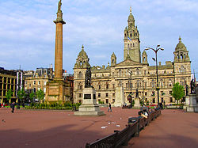
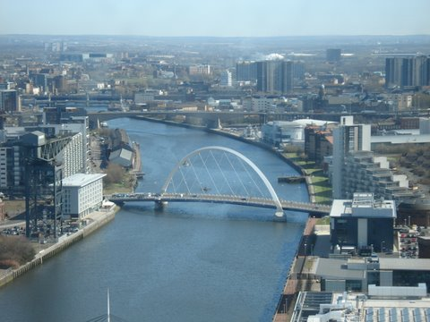

Taylor Swift

Taylor Alison Swift (born December 13, 1989) is an American singer-songwriter. One of the most popular contemporary female recording artists, she is known for narrative songs about her personal life, which has received much media attention.
As a songwriter, Swift has received awards from the Nashville Songwriters Association and the Songwriters Hall of Fame. She is also the recipient of ten Grammy Awards, five Guinness
World Records, one Emmy Award, 23 Billboard Music Awards, 11 Country Music Association Awards, eight Academy of Country Music Awards, and one Brit Award. Swift is one of the best-
selling artists of all time, having sold more than 40 million albums—including 27.1 million in the US—and 130 million single downloads. She has appeared in Time's 100 most influential people
in the world (2010 and 2015), Forbes' top-earning women in music (2011–2015), Forbes' 100 most powerful women (2015) and Forbes Celebrity 100 (2016). She was the youngest woman to
be included in the third of these and ranked first in Celebrity 100.
Glasgow Infomation!

George Square is the principal civic square in the city of Glasgow, Scotland. Named after King George III, George Square was laid out in 1781, part of the innovative Georgian central grid plan that initially spanned from Stockwell Street east to Buchanan Street.
The east side of the square is dominated by the ornate Glasgow City Chambers, headquarters of Glasgow City Council, which opened in 1888. On the South side are a number of buildings, including the former General Post Office, built in 1878 and currently under redevelopment.
Source: Wikipedia

The Clyde Arc (known locally as the Squinty Bridge), is a road bridge spanning the River Clyde in Glasgow, in west central Scotland, connecting Finnieston, near the Clyde Auditorium and SECC with Pacific Quay and Glasgow Science Centre in Govan. A prominent feature of the bridge is its innovative curved design and the way that it crosses the river at an angle. The Arc is the first city centre traffic crossing over the river built since the Kingston Bridge was opened to traffic in 1969.
The bridge connects Finnieston Street on the north bank of the river to Govan Road on the southern bank. The bridge takes four lanes of traffic, two of which are dedicated to public transport and two for private and commercial traffic. There are also pedestrian and cycle paths. The new bridge was built to provide better access to Pacific Quay and allow better access to regeneration areas on both banks of the Clyde. The bridge has been designed to cope with a possible light rapid transit system (light railway scheme) or even a tram system.
Source: Wikipedia